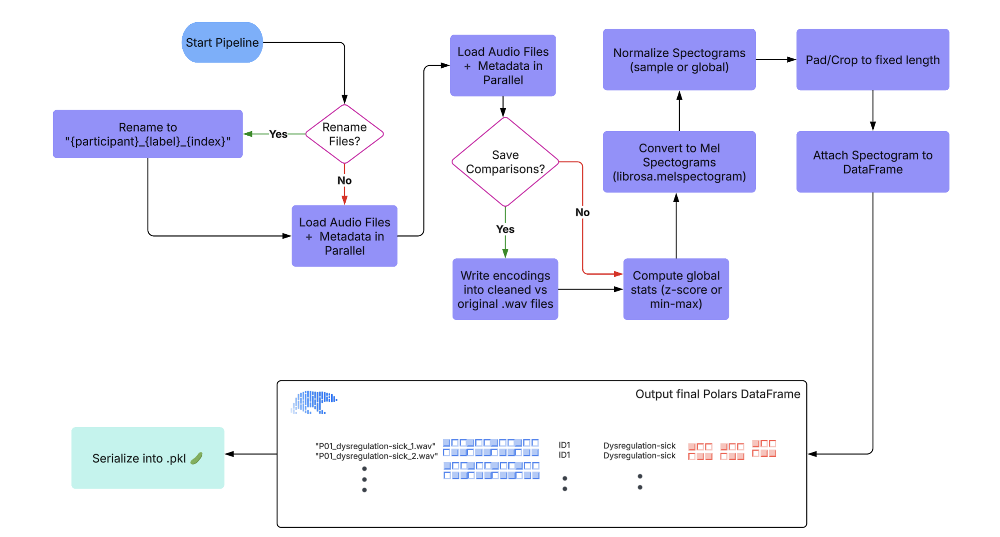

Machine Learning the Unspoken: Acoustic Feature Analysis for Classifying Intent in Nonverbal Vocalizations
Spring 2025 Data Science Project
Vishesh Narayan, Shivam Amin, Deval Bansal, Eric Yao, Eshan Khan
This project explores the use of machine learning to classify non-verbal vocalizations from autistic
individuals into expressive intent categories (e.g., “yes”, “no”, “frustrated”, “delighted”). We develop a
preprocessing pipeline to clean raw audio, extract acoustic features (pitch, MFCCs, spectral entropy), and
generate normalized Mel spectrograms. Statistical analysis confirms that these features vary meaningfully
across intent labels, motivating their use for supervised classification.
We experiment with classical models (logistic regression, random forests) and deep learning architectures
(CNNs, attention-based models) to assess classification performance and interpretability. The tutorial
provides a reproducible walkthrough from data preparation to model evaluation, with a supplemental PDF
detailing our exploratory data analysis. Our goal is to contribute toward tools that help decode
communicative intent in nonverbal autism contexts.

Contributions
-
Vishesh Narayan: Helped conceive and define the project
scope and objective (A). He developed the data preprocessing pipeline and extracted key audio features (B),
conducted exploratory data analysis and visualizations (C), and contributed to the design and implementation
of ML models including CNN, classical classifiers, and Attention-based models (D). Vishesh also ran training
experiments and model evaluations (E), helped interpret results and refine insights (F), and contributed
heavily to writing and formatting the final tutorial report (G).
-
Shivam Amin: Improved dataset loading by building
parallel processing functions for faster and more efficient data handling along with waveform cleaning,
spectrogram generation, and acoustic feature extraction (B). He contributed to exploratory data analysis and
interpretation (C), helped design and implement ML models (D), participated in interpreting visualizations and
results (F), and helped write and polish the final tutorial (G).
-
Deval Bansal: Contributed to EDA through feature summary
statistics and comparative plots (C), helped build classification models and optimize hyperparameters using
the elbow method (D), ran training and testing procedures on classical (E), created supporting visualizations
and analysis summaries (F), and co-authored the final report (G).
-
Eric Yao: Assisted in audio feature extraction and
comparative analysis of spectral signatures (C), developed deep learning models including CNN variants and
preprocessing logic (D), supported model training and hyperparameter tuning (E), helped interpret results and
plot visual comparisons (F), and contributed to the overall report structure and clarity (G).
-
Eshan Khan: Analyzed MFCC and pitch statistics across
label groups and visualized feature correlations (C), contributed to classifier experimentation and CNN
architecture selection (D), supported training runs and validation of model outputs (E), assisted in
visualizing trends and summarizing results (F), and contributed to writing key sections of the final tutorial
report (G).
Data Curation
In this section, we will go over details of the dataset and transforming our data into a indexable interactive
data frame.
Dataset
For this project, we use the ReCANVo dataset, which contains real-world vocalizations of non-verbal
autistic children and young adults. Each vocalization is labeled with its intended expressive category—such as
happy, frustrated, hungry, or self-talk—allowing for supervised learning approaches to
intent classification.
The dataset was compiled by Dr. Kristine Johnson at MIT as part of a study exploring how machine learning
techniques can be used to interpret communicative vocal cues in autistic individuals. Audio samples were recorded
in naturalistic settings, making this dataset especially valuable for research on real-world assistive
technologies.
Dataset citation:
Narain, J., & Johnson, K. T. (2021). ReCANVo: A Dataset of Real-World Communicative and Affective Nonverbal
Vocalizations [Data set]. Zenodo. https://doi.org/10.5281/zenodo.5786860
DataFrame creation
We loaded the audio files for our dataset using librosa, along with associated metadata from a CSV
file that included labels, participant IDs, and file indices. All of this information was organized into a
structured polars DataFrame. Because audio loading is computationally intensive and initially caused
RAM issues, Shivam implemented a multi-threaded approach to parallelize the loading process. This optimization
significantly reduced loading times and improved memory efficiency (and so our kernel stopped crashing ü•Ä).
Show/Hide Full Loading code
def load_audio_metadata(csv_path: str,
audio_dir: str,
limit: Union[int, None] = None,
clean_audio_params: dict = None,
save_comparisons: bool = False,
comparison_dir: str = 'audio_comparisons') -> pl.DataFrame:
"""
Loads audio metadata and processes files in parallel.
Args:
csv_path (str): Path to CSV file with metadata.
audio_dir (str): Directory where audio files are stored.
limit (int, optional): Number of rows to load.
clean_audio_params (dict, optional): Parameters for cleaning.
save_comparisons (bool): Save original vs cleaned audio files.
comparison_dir (str): Directory for saved audio comparisons.
Returns:
pl.DataFrame: DataFrame with processed audio metadata.
"""
df = pl.read_csv(csv_path).drop_nulls(subset=['Filename'])
if limit:
df = df.head(limit)
# Default audio cleaning parameters
default_clean_params = {
'denoise': True,
'remove_silence': True,
'normalize': True,
'min_silence_duration': 0.3,
'silence_threshold': -40
}
clean_params = {**default_clean_params, **(clean_audio_params or {})}
# Prepare file processing queue
file_info_list = [
(row['Filename'],
os.path.join(audio_dir, row['Filename']),
clean_params,
save_comparisons,
comparison_dir,
row['ID'],
row['Label'],
row['Index'])
for row in df.iter_rows(named=True)
]
# Modify process_audio_file to handle the additional parameters
def process_audio_file(
file_info: Tuple[str, str, dict, bool, str, int, str, int]
) -> Union[Tuple[str, List[float], int, str, float, int], None]:
"""
Loads and processes an audio file.
Args:
file_info (Tuple): Contains filename, full path, cleaning params,
saving options, ID, Label, and Index.
Returns:
Tuple[str, List[float], int, str, float, int] | None: Processed
audio metadata or None if failed.
"""
(
file_name, file_path, clean_params,
save_comparisons, comparison_dir,
file_id, label, index
) = file_info
y, sr = librosa.load(file_path, sr=SAMPLE_RATE)
cleaned_y = clean_audio(y, sr, **clean_params)
if save_comparisons:
save_audio_comparison(y, cleaned_y, sr, file_name, comparison_dir)
duration = len(cleaned_y) / sr
return file_name, cleaned_y.tolist(), file_id, label, duration, index
# Use ThreadPoolExecutor for parallel processing
with ThreadPoolExecutor(max_workers=os.cpu_count()) as executor:
results = list(executor.map(process_audio_file, file_info_list))
# Filter out None values from failed processing
audio_data = [res for res in results if res]
return pl.DataFrame(
audio_data,
schema=["Filename", "Audio", "ID", "Label", "Duration", "Index"], orient='row'
)
Exploratory Data Analysis
In this, we will overview all of our Exploratory Data Analysis (EDA) done to perform statistical tests on our
features, develop assumption about signals in our data, and visualize it too of course.
Audio Preprocessing Pipeline Overview
Our preprocessing pipeline for audio data follows a structured and modular sequence to prepare high-quality inputs
for downstream tasks. The steps are as follows:

This end-to-end pipeline ensures that raw audio recordings are systematically cleaned, transformed, and
structured, making them ready for efficient modeling and analysis. We have provided the preprocessing code as
well:
Show/Hide Full Pipeline Code
# ------------------- optional preprocessing ------------------- #
def rename_audio_files(csv_path: str,
audio_dir: str,
output_csv: str = "renamed_metadata.csv") -> None:
"""
Renames audio files based on Participant and Label and saves new metadata.
Args:
csv_path (str): Path to the input metadata CSV.
audio_dir (str): Directory containing audio files.
output_csv (str): Filename for the output metadata CSV.
"""
df = pl.read_csv(csv_path)
renamed_files = []
file_counts = {}
for file in df.iter_rows(named=True):
org_name = file['Filename']
id = file['Participant']
label = file['Label']
key = (id, label)
file_counts[key] = file_counts.get(key, 0) + 1
index = file_counts[key]
new_name = f"{id}_{label}_{index}.wav"
old_path = os.path.join(audio_dir, org_name)
new_path = os.path.join(audio_dir, new_name)
if not os.path.exists(old_path):
print(f"❌ File not found: {old_path}. Skipping renaming process.")
return # Exit the function immediately if any file is missing
os.rename(old_path, new_path)
renamed_files.append((new_name, id, label, index))
# If renaming was successful, save the updated metadata
renamed_df = pl.DataFrame(renamed_files, schema=["Filename", "ID", "Label", "Index"], orient="row")
output_path = os.path.join(audio_dir, output_csv)
renamed_df.write_csv(output_path)
def save_audio_comparison(original_y: np.ndarray,
cleaned_y: np.ndarray,
sr: int,
filename: str,
output_dir: str = 'audio_comparisons') -> None:
os.makedirs(output_dir, exist_ok=True)
base_name = os.path.splitext(filename)[0]
original_path = os.path.join(output_dir, f"{base_name}_original.wav")
cleaned_path = os.path.join(output_dir, f"{base_name}_cleaned.wav")
sf.write(original_path, original_y, sr)
sf.write(cleaned_path, cleaned_y, sr)
def clean_audio(y: np.ndarray,
sr: int,
denoise: bool = True,
remove_silence: bool = True,
normalize: bool = True,
min_silence_duration: float = 0.3,
silence_threshold: float = -40) -> np.ndarray:
"""
Enhanced audio cleaning function tailored for voice recordings of autistic individuals.
Parameters:
y (np.ndarray): Input audio time series
sr (int): Sampling rate
denoise (bool): Apply noise reduction
remove_silence (bool): Remove long silent segments
normalize (bool): Normalize audio amplitude
min_silence_duration (float): Minimum duration of silence to remove (in seconds)
silence_threshold (float): Decibel threshold for silence detection
Returns:
np.ndarray: Cleaned audio time series
"""
if len(y) == 0:
return y # Return empty if the input is empty
cleaned_audio = y.copy()
if normalize:
cleaned_audio = librosa.util.normalize(cleaned_audio)
# Noise reduction using spectral gating
if denoise:
stft = librosa.stft(cleaned_audio) # Compute STFT with valid n_fft
mag, phase = librosa.magphase(stft) # Magnitude and phase
noise_threshold = np.median(mag) * 0.5
mask = mag > noise_threshold # Apply noise threshold mask
cleaned_stft = stft * mask
cleaned_audio = librosa.istft(cleaned_stft) # Convert back to time domain
# Remove long silent segments
if remove_silence:
frame_length = int(sr * min_silence_duration)
hop_length = max(1, frame_length // 2) # Ensure hop_length is at least 1
non_silent_frames = librosa.effects.split(
cleaned_audio,
top_db=abs(silence_threshold),
frame_length=frame_length,
hop_length=hop_length
)
if len(non_silent_frames) == 0:
return np.array([]) # Return empty if all frames are silent
cleaned_audio = np.concatenate([
cleaned_audio[start:end] for start, end in non_silent_frames
])
# Apply high-pass filter to reduce low-frequency noise
b, a = signal.butter(6, 80 / (sr/2), btype='high')
cleaned_audio = signal.filtfilt(b, a, cleaned_audio)
return cleaned_audio
def compute_or_load_global_stats(ys: List[np.ndarray],
sr: int=SAMPLE_RATE,
n_mels: int = 128,
method: str = "zscore",
stats_file: str = "global_stats.json",
force_recompute: bool = False) -> Dict[str, float]:
"""
Computes or loads global normalization stats for Mel spectrograms.
Parameters:
ys (List[np.ndarray]): List of raw audio waveforms.
sr (int): Sample rate.
n_mels (int): Number of Mel bands.
method (str): 'zscore' or 'minmax'.
stats_file (str): Path to save/load stats JSON.
force_recompute (bool): If True, recomputes even if file exists.
Returns:
Dict[str, float]: Stats dictionary (mean/std or min/max).
"""
if not force_recompute and os.path.exists(stats_file):
print(f"üóÇÔ∏è Loading global stats from {stats_file}")
with open(stats_file, "r") as f:
return json.load(f)
print(f"üìä Computing global stats with method '{method}'...")
all_values = []
for y in ys:
S = librosa.feature.melspectrogram(y=y, sr=sr, n_mels=n_mels)
S_db = librosa.power_to_db(S, ref=np.max)
all_values.append(S_db.flatten())
all_values = np.concatenate(all_values)
stats = {}
if method == "zscore":
stats = {
"mean": float(np.mean(all_values)),
"std": float(np.std(all_values))
}
elif method == "minmax":
stats = {
"min": float(np.min(all_values)),
"max": float(np.max(all_values))
}
else:
raise ValueError("Unsupported method. Use 'zscore' or 'minmax'.")
# Save stats to file
with open(stats_file, "w") as f:
json.dump(stats, f)
print(f"üíæ Saved global stats to {stats_file}")
return stats
def audio_to_spectrogram(y: np.ndarray,
sr: int=SAMPLE_RATE,
n_mels: int = 128,
target_length: int = 128,
normalization: str = "minmax",
normalize_scope: str = "sample", # "sample" or "global"
global_stats: dict = None) -> np.ndarray:
"""
Converts a raw audio waveform into a normalized, fixed-size Mel spectrogram.
Parameters:
y (np.ndarray): Raw audio waveform.
sr (int): Sample rate of the audio.
n_mels (int): Number of Mel bands.
target_length (int): Number of time steps to pad/crop to.
normalization (str): 'minmax' or 'zscore'.
normalize_scope (str): 'sample' for per-sample normalization,
'global' for dataset-wide using global_stats.
global_stats (dict): Required if normalize_scope='global'. Should contain
'mean' and 'std' or 'min' and 'max'.
Returns:
np.ndarray: Mel spectrogram of shape (n_mels, target_length).
"""
def _normalize(S_db: np.ndarray, method: str, scope: str, stats: dict = None):
if scope == "sample":
if method == "minmax":
return (S_db - S_db.min()) / (S_db.max() - S_db.min())
elif method == "zscore":
mean = np.mean(S_db)
std = np.std(S_db)
return (S_db - mean) / std
else:
if method == "minmax":
return (S_db - stats["min"]) / (stats["max"] - stats["min"])
elif method == "zscore":
return (S_db - stats["mean"]) / stats["std"]
def _pad_or_crop(S: np.ndarray, target_len: int):
current_len = S.shape[1]
if current_len < target_len:
pad_width = target_len - current_len
return np.pad(S, ((0, 0), (0, pad_width)), mode='constant')
else:
return S[:, :target_len]
S = librosa.feature.melspectrogram(y=y, sr=sr, n_mels=n_mels)
S_db = librosa.power_to_db(S, ref=np.max)
S_norm = _normalize(S_db, method=normalization, scope=normalize_scope, stats=global_stats)
S_fixed = _pad_or_crop(S_norm, target_len=target_length)
return S_fixed
# ----------------------- pipeline ----------------------- #
def pipeline(rename: bool = False,
limit: Union[int, None] = None,
clean_audio_params: dict = None,
save_comparisons: bool = False,
) -> pl.DataFrame:
"""
Pipeline to run all preprocessing functions with timing and optional audio cleaning.
Only supports saving to .parquet (not CSV) to handle arrays properly.
"""
print("üöÄ Starting preprocessing pipeline...")
start = time.time()
if rename:
t0 = time.time()
rename_audio_files(
csv_path=ORG_CSV_PATH,
audio_dir=AUDIO_DIR,
)
print(f"üìù rename_audio_files completed in {time.time() - t0:.2f} seconds")
t0 = time.time()
df = load_audio_metadata(
csv_path=RENAME_CSV_PATH,
audio_dir=AUDIO_DIR,
limit=limit,
clean_audio_params=clean_audio_params,
save_comparisons=save_comparisons
)
print(f"⏳ load_audio_metadata completed in {time.time() - t0:.2f} seconds")
t0 = time.time()
stats = compute_or_load_global_stats(df["Audio"].to_numpy(), sr=SAMPLE_RATE)
print(f"üßÆ compute_or_load_global_stats completed in {time.time() - t0:.2f} seconds")
print("\nüìà Computed Statistics:")
for k, v in stats.items():
print(f" {k}: {v}")
print()
t0 = time.time()
df = df.with_columns([
pl.col("Audio").map_elements(lambda y: audio_to_spectrogram(
y=np.array(y),
sr=SAMPLE_RATE,
normalization='zscore',
normalize_scope='global',
global_stats=stats
), return_dtype=pl.Object).alias("Spectrogram")
])
print(f"üîä Spectrogram generation completed in {time.time() - t0:.2f} seconds")
print(f"üèÅ Full pipeline completed in {time.time() - start:.2f} seconds\n")
print(df)
return df
custom_clean_params = {
'denoise': True,
'remove_silence': True,
'normalize': True,
'min_silence_duration': 0.3,
'silence_threshold': -40
}
df = pipeline(
rename=False,
limit=None,
clean_audio_params=custom_clean_params,
save_comparisons=False
)
# Convert data to numpy arrays for serialization
df = df.with_columns([
pl.col("Audio").map_elements(
lambda y: np.array(y, dtype=np.float64).tolist(), return_dtype=pl.List(pl.Float64)
),
pl.col("Spectrogram").map_elements(
lambda s: np.array(s, dtype=np.float64).tolist(), return_dtype=pl.List(pl.List(pl.Float64))
)
])
# saves df to a parquet file to be cached and used later
df.write_parquet("processed_data.parquet")
This process results in the following DataFrame:
üöÄ Starting preprocessing pipeline...
⏳ load_audio_metadata completed in 138.89 seconds
üóÇÔ∏è Loading global stats from global_stats.json
üßÆ compute_or_load_global_stats completed in 0.16 seconds
üìà Computed Statistics:
mean: -55.975612227106474
std: 18.55726476893056
üîä Spectrogram generation completed in 29.24 seconds
üèÅ Full pipeline completed in 168.32 seconds
We have also created a loading function for the .parquet so we don't have to rerun the whole pipeline
every time we want to jump back into the notebook:
def open_parquet(path: str) -> pl.DataFrame:
return pl.read_parquet(path)
df = open_parquet("./processed_data.parquet")
df
DataFrame Overview
The Dataframe is stored as a .parquet containing key information about the audio including: Filename,
Audio, ID, Label, Duration, Index, and Spectrogram. The audio is stored as a list of floats, the spectrogram is
stored as a list of lists of floats, and the rest are strings or floats.
| str |
list[f64] |
str |
str |
f64 |
i64 |
list[list[f64]] |
| P01_dysregulation-sick_1.wav |
[-0.107705, -0.120444, ...] |
P01 |
dysregulation-sick |
0.25542 |
1 |
[[1.065977, 0.518101, ...], ...] |
| P01_dysregulation-sick_2.wav |
[0.145759, 0.148596, ...] |
P01 |
dysregulation-sick |
0.928798 |
2 |
[[1.004109, 0.631097, ...], ...] |
| P01_dysregulation-sick_3.wav |
[0.034167, 0.022343, ...] |
P01 |
dysregulation-sick |
1.137778 |
3 |
[[0.113385, -0.084511, ...], ...] |
| P01_dysregulation-sick_4.wav |
[-0.005172, -0.009896, ...] |
P01 |
dysregulation-sick |
3.645533 |
4 |
[[-0.463286, -0.999457, ...], ...] |
| P01_dysregulation-sick_5.wav |
[-0.0023, -0.001397, ...] |
P01 |
dysregulation-sick |
0.394739 |
5 |
[[0.945787, 0.609868, ...], ...] |
| ... |
| P16_delighted_135.wav |
[0.000027, 0.000085, ...] |
P16 |
delighted |
1.044898 |
135 |
[[-1.28051, -1.294608, ...], ...] |
| P16_delighted_136.wav |
[0.016696, 0.013343, ...] |
P16 |
delighted |
0.638549 |
136 |
[[0.801103, 0.513365, ...], ...] |
| P16_delighted_137.wav |
[0.008781, 0.005037, ...] |
P16 |
delighted |
0.766259 |
137 |
[[0.40735, 0.053851, ...], ...] |
| P16_delighted_138.wav |
[0.015408, 0.010745, ...] |
P16 |
delighted |
0.743039 |
138 |
[[0.439509, 0.102873, ...], ...] |
| P16_delighted_139.wav |
[-0.00114, -0.003822, ...] |
P16 |
delighted |
1.277098 |
139 |
[[0.294103, -0.048475, ...], ...] |
Data Exploration
We explored the dataset to understand the distribution of labels and the characteristics of the audio samples.
We visualized the distribution of labels using a bar plot, which showed that the dataset is relatively balanced
across different intent categories.
print(f"Dataframe shape: {df.shape}")
df.describe()
Dataframe shape: (7077, 7)
| str |
str |
f64 |
str |
str |
f64 |
f64 |
f64 |
| "count" |
"7077" |
7077.0 |
"7077" |
"7077" |
7077.0 |
7077.0 |
7077.0 |
| "null_count" |
"0" |
0.0 |
"0" |
"0" |
0.0 |
0.0 |
0.0 |
| "mean" |
null |
null |
null |
null |
1.240378 |
154.396637 |
null |
| "std" |
null |
null |
null |
null |
1.012603 |
158.147559 |
null |
| "min" |
"P01_bathroom_1.wav" |
null |
"P01" |
"affectionate" |
0.08127 |
1.0 |
null |
| "25%" |
null |
null |
null |
null |
0.592109 |
36.0 |
null |
| "50%" |
null |
null |
null |
null |
0.940408 |
104.0 |
null |
| "75%" |
null |
null |
null |
null |
1.520907 |
216.0 |
null |
| "max" |
"P16_social_9.wav" |
null |
"P16" |
"yes" |
14.048073 |
781.0 |
null |
YIPEEEEE üéâ
The DataFrame contains no null values, indicating that all audio files are present and correctly labeled.
df.null_count()
| u32 |
u32 |
u32 |
u32 |
u32 |
u32 |
u32 |
| 0 |
0 |
0 |
0 |
0 |
0 |
0 |
We will now examine label distributions:
label_counts = df['Label'].value_counts()
label_counts
| str |
u32 |
| "bathroom" |
20 |
| "more" |
22 |
| "protest" |
21 |
| "social" |
634 |
| "request" |
419 |
| ... |
| "dysregulated" |
704 |
| "happy" |
61 |
| "delighted" |
1272 |
| "laugh" |
8 |
| "frustrated" |
1536 |
There are discrepencies of how many labels exist per group. The mean is approximately 320, but there is a high
deviation of nearly 500
label_counts.describe()
| str |
str |
f64 |
| "count" |
"22" |
22.0 |
| "null_count" |
"0" |
0.0 |
| "mean" |
null |
321.681818 |
| "std" |
null |
551.158208 |
| "min" |
"affectionate" |
3.0 |
| "25%" |
null |
12.0 |
| "50%" |
null |
61.0 |
| "75%" |
null |
419.0 |
| "max" |
"yes" |
1885.0 |
The plot shows us that there is imbalance between labels. We should keep this into consideration during analysis
and training.
Show/Hide Plot Code
# Viridis colors
colors = px.colors.sample_colorscale('Viridis', np.linspace(0, 1, len(label_counts)))
# Interactive bar chart
fig = px.bar(
label_counts,
x='Label',
y='count',
title='Distribution of Labels',
color='Label',
color_discrete_sequence=colors
)
fig.update_layout(
xaxis_title='Label',
yaxis_title='Count',
xaxis_tickangle=70,
margin=dict(l=40, r=40, t=60, b=100),
plot_bgcolor='white',
)
# Save to HTML
fig.write_html("label_distribution.html")
Let us examine the distribution of labels by each participant:
Show/Hide Plot Code
# Make sure output directory exists
output_dir = "participant_barplots"
os.makedirs(output_dir, exist_ok=True)
# Convert Polars groupby to pandas if not already done
# participant_label_counts = df.group_by(['ID', 'Label']).agg(pl.len().alias('Count')).to_pandas()
participant_ids = participant_label_counts['ID'].unique()
for participant_id in participant_ids:
data = participant_label_counts[participant_label_counts['ID'] == participant_id]
# Generate Viridis colors
colors = px.colors.sample_colorscale('Viridis', np.linspace(0, 1, len(data)))
# Create interactive bar chart
fig = px.bar(
data,
x='Label',
y='Count',
title=f'Label Distribution for Participant {participant_id}',
color='Label',
color_discrete_sequence=colors
)
fig.update_layout(
xaxis_title='Label',
yaxis_title='Count',
xaxis_tickangle=70,
margin=dict(l=40, r=40, t=60, b=100),
plot_bgcolor='white',
autosize=False,
width=400,
height=400,
)
# Save each plot as HTML
filename = os.path.join(output_dir, f"participant_{participant_id}.html")
fig.show()
fig.write_html(filename)
Consider the distribution of labels by participant above. We find the following:
-
Label Distribution: The dataset contains a variety of labels, with "frustrated" and "delighted"
being the most common.
-
Label Variety: Some participants exhibit a wide range of labels, while others are more
consistent in their responses.
-
Customized Approaches: The differences in label distribution across participants suggest that
personalized models might be more effective (depending on model type).
We also examine the distribution in audio lengths. The variation in lengths tells us we must pad our audio prior
to feature analysis.
df = df.with_columns([
pl.col("Audio").map_elements(
lambda a: len(a), return_dtype=pl.Float64
).alias("Audio Length")
])
df['Audio Length'].describe()
| str |
f64 |
| "count" |
7077.0 |
| "null_count" |
0.0 |
| "mean" |
54700.662993 |
| "std" |
44655.798259 |
| "min" |
3584.0 |
| "25%" |
26112.0 |
| "50%" |
41472.0 |
| "75%" |
67072.0 |
| "max" |
619520.0 |
Spectograms of Unique Labels
This grid displays one Mel spectrogram for each unique vocalization label in
the dataset. Each spectrogram represents a single audio sample randomly
selected from that label group.
What is a Spectrogram?
A spectrogram is a time-frequency visualization of sound. It shows how energy (brightness) is distributed across
frequency bins (y-axis) over time (x-axis). Brighter regions indicate more intensity at that frequency and time.
Interpretation Notes
These spectrograms give an intuitive view of the acoustic patterns present in
each vocalization type — for example:
-
"YES" shows low-frequency harmonics
-
"FRUSTRATED" is noisier and denser
-
"SELF-TALK" often contains repeating patterns
-
"GLEE" and "DELIGHTED" appear more tonal or melodic
This kind of visualization helps validate that distinct spectral features
exist across labels, supporting downstream classification or clustering tasks.
Show/Hide Spectrogram Plot Code
def plot_unique_label_spectrograms_plotly(df, output_dir="spectrograms"):
"""
Generate individual Plotly spectrograms for each unique label and save as HTML files.
Args:
df: Polars DataFrame containing 'Label' and 'Spectrogram' columns
output_dir: Directory to save the HTML files (will be created if it doesn't exist)
"""
# Create output directory if it doesn't exist
os.makedirs(output_dir, exist_ok=True)
# Get unique labels
unique_labels = df.select("Label").unique().to_series().to_list()
for label in unique_labels:
# Get the first spectrogram for this label
row = df.filter(pl.col("Label") == label).row(0)
spectrogram = row[df.columns.index("Spectrogram")]
spectrogram_np = np.array(spectrogram, dtype=np.float32)
if spectrogram_np.ndim == 2:
# Create a Plotly figure
fig = go.Figure()
# Add the spectrogram as a heatmap
fig.add_trace(go.Heatmap(
z=spectrogram_np,
colorscale='viridis',
showscale=True
))
# Update layout with title and axis labels
fig.update_layout(
title=f"{label.upper()} Spectrogram",
xaxis_title="Time",
yaxis_title="Frequency",
width=800,
height=600
)
# Save as HTML file
output_file = os.path.join(output_dir, f"{label.lower()}_spectrogram.html")
fig.show()
fig.write_html(output_file)
print(f"Saved {output_file}")
else:
print(f"Skipping {label}: spectrogram is not 2-dimensional")
print(f"All spectrograms saved to '{output_dir}' directory.")
plot_unique_label_spectrograms_plotly(df, output_dir="spectrograms")
Projection Setup for Audio Data Visualization
To visualize complex audio data, we extract key features, specifically Mel Frequency Cepstral Coefficients (MFCCs)
and Pitch Variance, from the audio samples. These features are chosen for their ability to encapsulate the essential
characteristics of sound.
The extracted features are then subjected to dimensionality reduction techniques to project them into a 2D space,
facilitating easier visualization and interpretation. The methods used for this purpose include:
-
PCA (Principal Component Analysis): Linear transformation
technique to reduce the dimensionality while attempting to preserve as much variance as possible.
-
t-SNE (t-Distributed Stochastic Neighbor Embedding): A
non-linear approach, t-SNE is effective in visualizing high-dimensional data by maintaining local relationships
in a lower-dimensional space.
-
UMAP (Uniform Manifold Approximation and Projection):
Another non-linear method that excels in preserving both local and global data structures, making it ideal for a
nuanced exploration of audio features.
These projections allow us to visually analyze the clustering and distribution of audio samples, thereby providing
insights into the inherent patterns and distinctions within the data.
We notice no clear clusters forming, requiring possible kernel tricks to get better separation.
Show/Hide Feature Extraction Code
# Get pitch variance as feature for audio projection
def get_pitch_var(y: List[float], sr: int=SAMPLE_RATE):
y_np = np.array(y, dtype=np.float64)
f0, voiced_flag, _ = librosa.pyin(
y_np,
sr=sr,
fmin=librosa.note_to_hz('C2'),
fmax=librosa.note_to_hz('C7')
)
if f0 is None:
return 0.0
f0_voiced = f0[voiced_flag]
return float(np.std(f0_voiced)) if len(f0_voiced) > 0 else 0.0
# Gets MFCC means of signal (feature for audio projection)
def get_mfcc_means(y: List[float], sr: int = 16000, n_mfcc: int = 3) -> List[float]:
y_np = np.array(y, dtype=np.float32)
mfccs = librosa.feature.mfcc(y=y_np, sr=sr, n_mfcc=n_mfcc)
return np.mean(mfccs, axis=1).tolist() # returns [mfcc-1, mfcc-2, mfcc-3]
# Extract MFCC-1, MFCC-2, MFCC-3, and Pitch variance as features for PCA
df = df.with_columns([
pl.col("Audio").map_elements(lambda y: get_mfcc_means(y)[0], return_dtype=pl.Float64).alias("MFCC-1"),
pl.col("Audio").map_elements(lambda y: get_mfcc_means(y)[1], return_dtype=pl.Float64).alias("MFCC-2"),
pl.col("Audio").map_elements(lambda y: get_mfcc_means(y)[2], return_dtype=pl.Float64).alias("MFCC-3"),
pl.col("Audio").map_elements(lambda y: get_pitch_var(y), return_dtype=pl.Float64).alias("PitchVar")
])
Key Observations from Projections
| PCA |
2D |
Low |
Poor |
Broad dispersion, little label separation |
| PCA |
3D |
Low |
Poor |
Added depth but still overlapping clusters |
| UMAP |
2D |
Moderate |
Better than PCA |
Some visible clusters; improved separation |
| UMAP |
3D |
Good |
Improved |
Neighborhood structure preserved in 3D space |
| t-SNE |
2D |
High |
Strong |
Tight clusters and clear separation |
| t-SNE |
3D |
Very High |
Very Strong |
Excellent local structure; highly interpretable |
Additional Note: Examine the t-SNE 3D projection. It seems like the labels are in a layer/sheet
formation. We can possibly apply kernel tricks to our data and use SVMs to see if there is a hyper place to split
on.
Show/Hide 2D Projection Code
# Features for correlation heatmap
features = ["PitchVar", "MFCC-1", "MFCC-2", "MFCC-3"]
corr = df[features].corr()
# Convert Polars DataFrame to numpy array
corr_array = corr.to_numpy()
corr_rounded = np.round(corr_array, 2)
# 1. Correlation Heatmap (Plotly)
fig_heatmap = go.Figure(data=go.Heatmap(
z=corr_array,
x=features,
y=features,
zmin=-1, zmax=1,
colorscale='RdBu_r',
text=corr_rounded,
texttemplate='%{text}',
showscale=True,
))
fig_heatmap.update_layout(
title={
'text': "Correlation Heatmap of Audio Features",
'xanchor': 'left',
'yanchor': 'top',
},
margin=dict(l=20, r=220, t=60, b=20), # More right margin
legend=dict(
orientation="v",
yanchor="top",
y=1,
xanchor="left",
x=1, # Push legend further right outside the plot
font=dict(size=12),
itemwidth=40, # Force horizontal space per legend item
title='Correlations between Features'
)
)
fig_heatmap.show()
fig_heatmap.write_html("correlation_heatmap.html")
# Prepare MFCC data
mfccs = ["MFCC-" + str(i) for i in range(1, 4)]
X = df[mfccs].to_numpy()
labels = df["Label"].to_numpy()
unique_labels = np.unique(labels)
# Scale features
scaler = StandardScaler()
X_scaled = scaler.fit_transform(X)
# Create a distinct color map for the labels
distinct_colors = {
label: color for label, color in zip(
unique_labels,
px.colors.qualitative.D3 + px.colors.qualitative.Bold + px.colors.qualitative.Safe
)
}
# 2. PCA (Plotly)
pca = PCA(n_components=2)
X_pca = pca.fit_transform(X_scaled)
# Create DataFrame for Plotly
df_pca = pd.DataFrame({
'Component 1': X_pca[:, 0],
'Component 2': X_pca[:, 1],
'Label': labels.astype(str)
})
fig_pca = px.scatter(
df_pca,
x='Component 1',
y='Component 2',
color='Label',
color_discrete_map=distinct_colors,
opacity=0.7,
title='2D PCA of Audio Features'
)
fig_pca.update_layout(
margin=dict(l=20, r=220, t=60, b=20), # More right margin
legend=dict(
orientation="v",
yanchor="top",
y=1,
xanchor="left",
x=1, # Push legend further right outside the plot
font=dict(size=12),
itemwidth=40, # Force horizontal space per legend item
)
)
fig_pca.show()
fig_pca.write_html("pca_projection.html")
# 3. UMAP (Plotly)
reducer = umap.UMAP(n_components=2, random_state=42)
X_umap = reducer.fit_transform(X_scaled)
# Create DataFrame for Plotly
df_umap = pd.DataFrame({
'Component 1': X_umap[:, 0],
'Component 2': X_umap[:, 1],
'Label': labels.astype(str)
})
fig_umap = px.scatter(
df_umap,
x='Component 1',
y='Component 2',
color='Label',
color_discrete_map=distinct_colors,
opacity=0.7,
title='UMAP Projection of Audio Features'
)
fig_umap.update_layout(
margin=dict(l=20, r=220, t=60, b=20), # More right margin
legend=dict(
orientation="v",
yanchor="top",
y=1,
xanchor="left",
x=1, # Push legend further right outside the plot
font=dict(size=12),
itemwidth=40, # Force horizontal space per legend item
)
)
fig_umap.show()
fig_umap.write_html("umap_projection.html")
# 4. t-SNE (Plotly)
tsne = TSNE(n_components=2, random_state=42)
X_tsne = tsne.fit_transform(X_scaled)
# Create DataFrame for Plotly
df_tsne = pd.DataFrame({
'Component 1': X_tsne[:, 0],
'Component 2': X_tsne[:, 1],
'Label': labels.astype(str)
})
fig_tsne = px.scatter(
df_tsne,
x='Component 1',
y='Component 2',
color='Label',
color_discrete_map=distinct_colors,
opacity=0.7,
title='t-SNE Projection of Audio Features'
)
fig_tsne.update_layout(
margin=dict(l=20, r=220, t=60, b=20), # More right margin
legend=dict(
orientation="v",
yanchor="top",
y=1,
xanchor="left",
x=1, # Push legend further right outside the plot
font=dict(size=12),
itemwidth=40, # Force horizontal space per legend item
)
)
fig_tsne.show()
fig_tsne.write_html("tsne_projection.html")
Show/Hide 3D Projection Code
features = ["PitchVar", "MFCC-1", "MFCC-2", "MFCC-3"]
# Prepare MFCC data
mfccs = ["MFCC-" + str(i) for i in range(1, 4)]
X = df[mfccs].to_numpy()
labels = df["Label"].to_numpy()
# Scale features
scaler = StandardScaler()
X_scaled = scaler.fit_transform(X)
# Create a distinct color map for the labels
unique_labels = np.unique(labels)
# Distinct color palette - high contrast colors that are visually distinguishable
distinct_colors = {
# Vibrant, distinct colors that work well for visualization
label: color for label, color in zip(
unique_labels,
px.colors.qualitative.D3 + px.colors.qualitative.Bold + px.colors.qualitative.Safe
)
}
# Helper to make 3D plot and save HTML with distinct colors
def save_3d_plot(X_3d, labels, title, filename):
# Create a dataframe for plotly
import pandas as pd
plot_df = pd.DataFrame({
'x': X_3d[:, 0],
'y': X_3d[:, 1],
'z': X_3d[:, 2],
'Label': labels.astype(str)
})
fig = px.scatter_3d(
plot_df,
x='x', y='y', z='z',
color='Label',
color_discrete_map=distinct_colors, # Apply the custom color mapping
title=title,
labels={"x": "Component 1", "y": "Component 2", "z": "Component 3"},
opacity=0.7
)
fig.update_layout(
margin=dict(l=20, r=220, t=60, b=20), # More right margin
legend=dict(
orientation="v",
yanchor="top",
y=1,
xanchor="left",
x=1, # Push legend further right outside the plot
font=dict(size=12),
itemwidth=40, # Force horizontal space per legend item
)
)
fig.show()
fig.write_html(f"../checkpoint3/website/clarity/images/{filename}")
# 2. PCA (3D)
pca = PCA(n_components=3)
X_pca = pca.fit_transform(X_scaled)
save_3d_plot(X_pca, labels, "3D PCA of Audio Features", "pca_3d.html")
# 3. UMAP (3D)
reducer = umap.UMAP(n_components=3, random_state=42)
X_umap = reducer.fit_transform(X_scaled)
save_3d_plot(X_umap, labels, "3D UMAP Projection of Audio Features", "umap_3d.html")
# 4. t-SNE (3D)
tsne = TSNE(n_components=3, random_state=42)
X_tsne = tsne.fit_transform(X_scaled)
save_3d_plot(X_tsne, labels, "3D t-SNE Projection of Audio Features", "tsne_3d.html")
Correlation/Tsne/PCA/Umap (Dimensions = 2)
Figure 1: Correlation heatmap of MFCCs and Pitch Variance.
Figure 2: t-SNE projection of audio features.
Figure 3: PCA projection of audio features.
Figure 4: UMAP projection of audio features.
t-SNE/PCA/Umap (Dimensions = 3)
Figure 1: 3d t-SNE projection of audio features.
Figure 2: 3d PCA projection of audio features.
Figure 3: 3d UMAP projection of audio features.
Feature Extraction & Hypothesis Testing
In this section, we extract acoustic features from vocalizations and statistically evaluate whether they differ
significantly across expression labels. These tests aim to determine if vocal cues such as pitch variability and spectral shape
(MFCCs) carry meaningful information that can distinguish between intents like "yes" and
"no".
Tests Conducted:
-
Pitch Variability – Mann-Whitney U test on pitch
standard deviation across samples.
-
MFCC Differences – Mann-Whitney U test on mean MFCC
coefficients (1–3).
-
Entropy Differences – ANOVA + Ad-Hoc Pairwise T tests
on Spectral Entropy.
Results:
Our statistical tests revealed significant acoustic differences between
"yes" and "no" vocalizations:
-
Pitch Variability:
-
MFCCs (Spectral Shape):
-
Significant differences were found in MFCC-1 and
MFCC-3 (both p < 0.001,
Cohen's d > 1.6), indicating differences in spectral slope and
fine spectral variation.
-
MFCC-2 showed no
significant difference, suggesting similar mid-frequency emphasis in both groups.
-
Spectral Entropy:
-
Significant differences in spectral entropy were found between various vocalization
labels, indicating that certain emotional states could be distinguished based on their spectral
characteristics.
-
Strong entropy differences were notably present between "dysregulated" and
"delighted", and between "selftalk" and "frustrated",
highlighting that spectral entropy can be a useful feature in distinguishing emotional states in
vocalizations.
These findings suggest that both pitch dynamics and spectral shape are promising features for distinguishing vocal intent in
non-verbal utterances for the model development phase.
Test 1: Pitch Variability Differences between "Yes" and "No" Vocalizations (Mann-Whitney U Test)
This test evaluates whether there are statistically significant differences in pitch
variability between vocalizations labeled as yes and
no. Pitch variability is measured as the standard deviation of
estimated pitch (f₀) across time for each audio sample. This metric reflects how much the speaker's pitch
varies within a vocalization type, often tied to emotional expressiveness or vocal intent.
What is Pitch Variability?
-
Calculated using librosa's PYIN algorithm,
which
estimates fundamental frequency (f₀) for voiced segments of an audio signal.
-
We then compute the standard deviation of those f₀ values
per sample.
-
A higher pitch std generally means more variation in
tone, while a lower std suggests more monotonic vocalization.
Test Setup
-
Statistic: Mann-Whitney U test (non-parametric)
-
Effect Size: Cohen's d
-
Input Feature: Standard deviation of pitch per sample
-
Groups Compared: yes vs no
vocalizations
-
Sample Size: 100 samples for yes, 12 samples
for no
-
Alpha: Will use a significance level of 0.05
Null Hypothesis (H₀):
There is no difference in pitch variability between vocalizations labeled
as yes and no. The distributions of pitch standard deviation are the same for both
groups.
Alternative Hypothesis (H₁):
There is a difference in pitch variability between vocalizations
labeled as
yes and no. The distributions of pitch standard deviation are not the same for both
groups, indicating that one group may exhibit more pitch variation than the other.
Group Means & Standard Deviations
| "Yes" |
19.818 ± 20.91 |
| "No" |
114.964 ± 110.339 |
Statistical Results Summary
| "U Statistic" |
260.0 |
| "p-value" |
0.001 |
| "Cohen's d" |
-2.370 |
| "Mean Difference" |
-95.147 |
| "Significant" |
Yes |
Interpretation
Since our p = 0.01 < alpha, we reject the null hypothesis. We interpret
that:
-
The no vocalizations exhibit dramatically higher pitch variability than yes samples —
almost 5x higher on average
-
The test yields a low p-value (0.01) and a large negative effect size (Cohen’s d = -2.38), indicating a strong and
statistically significant difference.
-
This suggests that pitch dynamics could be a powerful
feature in differentiating certain types of vocal intent, especially when classifying expressive vs. flat
responses.
Show/Hide Full Loading code
def batch_pitch_extraction(audio_list: List,
max_samples_per_batch: int=50,
sr: int=SAMPLE_RATE) -> List[float]:
# Randomly sample if batch is too large
if len(audio_list) > max_samples_per_batch:
sample_indices = np.random.choice(len(audio_list), max_samples_per_batch, replace=False)
audio_list = [audio_list[i] for i in sample_indices]
pitch_stds = []
for audio_array in audio_list:
audio_array = np.asarray(audio_array, dtype=np.float64)
# Extract pitch using PYIN
f0, voiced_flag, _ = librosa.pyin(
audio_array,
fmin=librosa.note_to_hz('C2'),
fmax=librosa.note_to_hz('C7'),
sr=sr
)
# Filter for voiced segments
f0_voiced = f0[voiced_flag]
# Calculate pitch std, handle empty case
pitch_std = float(np.std(f0_voiced)) if len(f0_voiced) > 0 else 0.0
pitch_stds.append(pitch_std)
return pitch_stds
def pitch_variability_test(df: pl.DataFrame,
max_batch_size: int=50,
target_labels: List[str]=['frustrated', 'delighted']) -> Dict[str, float]:
# Group audio by label
label_audio_groups = {}
for label in target_labels:
# Extract audio for each label
label_audio_groups[label] = df.filter(pl.col("Label") == label)["Audio"].to_list()
# Batch pitch extraction
label_pitch_stds = {}
for label, audio_list in label_audio_groups.items():
label_pitch_stds[label] = batch_pitch_extraction(audio_list=audio_list, max_samples_per_batch=max_batch_size)
# Print basic stats
pitch_array = np.array(label_pitch_stds[label])
print(f"{label} samples: {len(pitch_array)}")
print(f" Mean pitch std: {np.mean(pitch_array):.4f}")
print(f" Std of pitch std: {np.std(pitch_array):.4f}")
# Perform statistical tests
label1_data = label_pitch_stds[target_labels[0]]
label2_data = label_pitch_stds[target_labels[1]]
# Mann-Whitney U Test
u_statistic, p_value = scipy.stats.mannwhitneyu(
label1_data,
label2_data,
alternative='two-sided'
)
# Effect size calculation (Cohen's d)
mean1, std1 = np.mean(label1_data), np.std(label1_data)
mean2, std2 = np.mean(label2_data), np.std(label2_data)
# Pooled standard deviation
pooled_std = np.sqrt(((len(label1_data) - 1) * std1**2 +
(len(label2_data) - 1) * std2**2) /
(len(label1_data) + len(label2_data) - 2))
# Cohen's d
cohens_d = (mean1 - mean2) / pooled_std
# Prepare results
results = {
'Mann-Whitney U Statistic': u_statistic,
'p-value': p_value,
'Cohen\'s d': cohens_d,
'Mean Difference': mean1 - mean2,
'Significant': p_value < 0.05
}
# Print results
print("\n=== Hypothesis Test Results ===")
for key, value in results.items():
print(f"{key}: {value}")
return results
t0 = time.time()
results = pitch_variability_test(df=df, max_batch_size=100, target_labels=["yes", "no"])
print(f"\nüé∂ Pitch Variability Test completed in {time.time() - t0:.2f} seconds")
This process results in the following results:
yes samples: 100
Mean pitch std: 19.8174
Std of pitch std: 20.9069
no samples: 12
Mean pitch std: 114.9644
Std of pitch std: 110.3390
=== Hypothesis Test Results ===
Mann-Whitney U Statistic: 260.0
p-value: 0.0014043896888058
Cohen's d: -2.3706435406222472
Mean Difference: -95.14698434279867
Significant: True
üé∂ Pitch Variability Test completed in 30.40 seconds
Show/Hide Full Plot code
def plot_plotly_spectrogram_comparison(df, label1="yes", label2="no", sr=SAMPLE_RATE, n_examples=4, output_dir="comparison_spectrograms"):
"""
Generate side-by-side Plotly spectrograms comparing 'yes' and 'no' labels and save as HTML files.
Args:
df: Polars DataFrame containing 'Label' and 'Audio' columns
label1: First label to compare (default: "yes")
label2: Second label to compare (default: "no")
sr: Sample rate (default: 16000)
n_examples: Number of examples to plot (default: 4)
output_dir: Directory to save the HTML files (will be created if it doesn't exist)
"""
# Create output directory if it doesn't exist
os.makedirs(output_dir, exist_ok=True)
# Get examples for each label
label1_examples = df.filter(pl.col("Label") == label1).head(n_examples).to_pandas()
label2_examples = df.filter(pl.col("Label") == label2).head(n_examples).to_pandas()
# Create a separate HTML file for each pair of examples
for j in range(n_examples):
if j < len(label1_examples) and j < len(label2_examples):
# Create subplot figure with 1 row and 2 columns
fig = make_subplots(
rows=1, cols=2,
subplot_titles=(f"{label1.upper()} Sample #{j+1}", f"{label2.upper()} Sample #{j+1}")
)
# Process first label example
y1 = np.array(label1_examples.iloc[j]["Audio"])
S1 = librosa.feature.melspectrogram(y=y1, sr=sr, n_mels=128)
S_db1 = librosa.power_to_db(S1, ref=np.max)
# Process second label example
y2 = np.array(label2_examples.iloc[j]["Audio"])
S2 = librosa.feature.melspectrogram(y=y2, sr=sr, n_mels=128)
S_db2 = librosa.power_to_db(S2, ref=np.max)
# Add spectrograms as heatmaps
fig.add_trace(
go.Heatmap(
z=S_db1,
colorscale='viridis',
colorbar=dict(title="dB", x=0.46),
name=label1.upper()
),
row=1, col=1
)
fig.add_trace(
go.Heatmap(
z=S_db2,
colorscale='viridis',
colorbar=dict(title="dB", x=1.0),
name=label2.upper()
),
row=1, col=2
)
# Update layout
fig.update_layout(
title_text=f"Mel Spectrogram Comparison: {label1.upper()} vs {label2.upper()} (Sample #{j+1})",
height=400,
width=1200
)
# Update axes
fig.update_xaxes(title_text="Time", row=1, col=1)
fig.update_xaxes(title_text="Time", row=1, col=2)
fig.update_yaxes(title_text="Mel Frequency", row=1, col=1)
# Save as HTML file
output_file = os.path.join(output_dir, f"comparison_{label1}_vs_{label2}_sample{j+1}.html")
fig.show()
fig.write_html(output_file)
print(f"Saved {output_file}")
print(f"All comparison spectrograms saved to '{output_dir}' directory.")
plot_spectrogram_comparison(df, label1="yes", label2="no", sr=SAMPLE_RATE, n_examples=4)
Yes/No Spectrograms
The spectrograms above illustrate the differences in pitch variability between "yes" and "no" vocalizations.
Test 2: Mel Frequency Cepstral Coefficients (MFCCs) Mean Differences between "Yes" and "No" Vocalizations
(Pairwise Mann-Whitney U Test)
This test evaluates whether there are statistically significant differences in spectral shape between vocalizations labeled as "yes" and
"no", focusing on the mean values of the first three MFCCs.
What are MFCCs?
-
MFCC-1: Captures the overall spectral slope — indicates the energy balance between low and high
frequencies.
-
MFCC-2: Captures the curvature of the spectral envelope — flat vs. peaked energy in the mid
frequencies.
-
MFCC-3: Represents fine-grained variation — subtle changes or "ripples" in the spectral shape.
-
Higher-order MFCCs (4, 5, …) capture increasingly localized detail and high-frequency texture.
Test Setup
-
Statistic: Pairwise Mann-Whitney U test (non-parametric)
-
Effect Size: Cohen's d
-
Input Features: Mean of MFCC-1, MFCC-2, and MFCC-3 per
sample
-
Groups Compared: "yes" vs "no"
vocalizations
-
Sample Size: 100 samples for "yes", 12
samples for "no"
-
Alpha: Will use a significance level of 0.05
Null Hypothesis (H₀):
There are no significant differences in the mean values of the first three
MFCCs (MFCC-1, MFCC-2, and MFCC-3) between vocalizations labeled as "yes" and "no". The
distributions of these spectral shape measures are the same across both groups.
Alternative Hypothesis (H₁):
There are significant differences in the mean values of the first three
MFCCs (MFCC-1, MFCC-2, and MFCC-3) between vocalizations labeled as "yes" and "no". The
distributions of these spectral shape measures vary between the two groups, indicating discriminative spectral
characteristics.
Group Means & Standard Deviations
| "Yes" |
-323.365 ± 32.903 |
122.607 ± 18.428 |
-16.314 ± 15.998 |
| "No" |
-262.130 ± 42.377 |
114.124 ± 25.801 |
-52.627 ± 27.668 |
Statistical Results Summary
| "MFCC-1" |
158.0 |
3.277e-05 |
-1.803 |
-61.235 |
Yes |
| "MFCC-2" |
708.0 |
0.312 |
0.440 |
8.483 |
No |
| "MFCC-3" |
1048.0 |
2.557e-05 |
2.073 |
36.312 |
Yes |
Interpretation
Since our p-values for MFCC-1 (p = 3.277e-05) and MFCC-3 (p = 2.557e-05) are both below alpha = 0.05, we reject the null hypothesis for these coefficients. We interpret that:
-
MFCC-1 shows significant differences between
"yes" and "no" vocalizations, with a large negative
effect size (Cohen's d = -1.803), indicating "yes" vocalizations have a steeper spectral
slope.
-
MFCC-3 exhibits significant differences with an even
larger positive effect size (Cohen's d = 2.073), showing that
"yes" vocalizations have more subtle spectral variations.
-
MFCC-2 does not show a statistically significant
difference (p = 0.312), suggesting that the mid-frequency curvature is similar between the two vocalization
types.
These results suggest that spectral slope (MFCC-1) and fine-grained spectral variation (MFCC-3) are powerful discriminators between
"yes" and "no" vocalizations, while the mid-frequency
curvature (MFCC-2) carries less discriminative information.
Show/Hide Full MFCC code
def batch_mfcc_extraction(audio_list: List,
max_samples_per_batch: int=50,
sr: int=SAMPLE_RATE,
n_coeffs: int=3) -> List[float]:
if len(audio_list) > max_samples_per_batch:
sample_indices = np.random.choice(len(audio_list), max_samples_per_batch, replace=False)
audio_list = [audio_list[i] for i in sample_indices]
mfcc_means = []
for audio_array in audio_list:
audio_array = np.asarray(audio_array, dtype=np.float32)
mfccs = librosa.feature.mfcc(y=audio_array, sr=sr, n_mfcc=n_coeffs)
mfcc_mean = np.mean(mfccs, axis=1)
mfcc_means.append(mfcc_mean)
return mfcc_means
def mfcc_significance_test(df, max_batch_size=50, target_labels=["frustrated", "delighted"], n_coeffs=3):
label_audio_groups = {}
for label in target_labels:
label_audio_groups[label] = df.filter(pl.col("Label") == label)["Audio"].to_list()
label_mfcc_means = {}
for label, audio_list in label_audio_groups.items():
label_mfcc_means[label] = batch_mfcc_extraction(
audio_list,
max_samples_per_batch=max_batch_size,
n_coeffs=n_coeffs,
sr=SAMPLE_RATE
)
mfcc_array = np.array(label_mfcc_means[label])
print(f"{label} samples: {len(mfcc_array)}")
for i in range(n_coeffs):
print(f" MFCC-{i+1} Mean: {np.mean(mfcc_array[:, i]):.4f}, Std: {np.std(mfcc_array[:, i]):.4f}")
results = {}
for i in range(n_coeffs):
data1 = [x[i] for x in label_mfcc_means[target_labels[0]]]
data2 = [x[i] for x in label_mfcc_means[target_labels[1]]]
u_statistic, p_value = scipy.stats.mannwhitneyu(data1, data2, alternative='two-sided')
mean1, std1 = np.mean(data1), np.std(data1)
mean2, std2 = np.mean(data2), np.std(data2)
pooled_std = np.sqrt(((len(data1) - 1) * std1**2 + (len(data2) - 1) * std2**2) /
(len(data1) + len(data2) - 2))
cohens_d = (mean1 - mean2) / pooled_std
results[f"MFCC-{i+1}"] = {
'U Statistic': u_statistic,
'p-value': p_value,
'Cohen\'s d': cohens_d,
'Mean Difference': mean1 - mean2,
'Significant': p_value < 0.05
}
print("\n=== MFCC Significance Test Results ===")
for k, v in results.items():
print(f"\n{k}")
for stat, val in v.items():
print(f" {stat}: {val}")
return results
t0 = time.time()
results = mfcc_significance_test(df, max_batch_size=100, target_labels=["yes", "no"], n_coeffs=3)
print(f"\nüéõÔ∏è MFCC Significance Test completed in {time.time() - t0:.2f} seconds")
# Visualize results
box_and_heat_mfcc_comparison(df, labels=["yes", "no"], n_mfcc=3)
This process results in the following results:
yes samples: 100
MFCC-1 Mean: -323.3647, Std: 32.9024
MFCC-2 Mean: 122.6066, Std: 18.4277
MFCC-3 Mean: -16.3141, Std: 15.9972
no samples: 12
Mean pitch std: 114.9644
Std of pitch std: 110.3390
=== Hypothesis Test Results ===
MFCC-1
U Statistic: 158.0
p-value: 3.277395269119212e-05
Cohen's d: -1.8026657104492188
Mean Difference: -61.2347412109375
Significant: True
MFCC-2
U Statistic: 708.0
p-value: 0.31188485986767844
Cohen's d: 0.43969401717185974
Mean Difference: 8.482711791992188
Significant: False
MFCC-3
U Statistic: 1048.0
p-value: 2.557395269119212e-05
Cohen's d: 2.0729801654815674
Mean Difference: 36.31230163574219
Significant: True
üéõÔ∏è MFCC Significance Test completed in 0.44
seconds
Show/Hide Full Plot code
def box_and_heat_mfcc_comparison(df, labels=["yes", "no"], sr=22050, n_mfcc=3):
# Step 1: Prepare data
data = []
mfcc_data = {label: [] for label in labels}
for label in labels:
for row in df.filter(pl.col("Label") == label).iter_rows(named=True):
y = np.array(row["Audio"])
mfccs = librosa.feature.mfcc(y=y, sr=sr, n_mfcc=n_mfcc)
mfcc_mean = np.mean(mfccs, axis=1)
# For boxplot
for i in range(n_mfcc):
data.append({
"MFCC": f"MFCC-{i+1}",
"Value": float(mfcc_mean[i]),
"Label": label
})
# For heatmap
mfcc_data[label].append(mfcc_mean)
# Convert to pandas DataFrame for Plotly
df_plot = pd.DataFrame(data)
# Prepare heatmap data
heat_data = []
for label in labels:
means = np.mean(np.stack(mfcc_data[label]), axis=0)
row = [float(means[i]) for i in range(n_mfcc)]
heat_data.append(row)
# Color mapping
colors = px.colors.qualitative.D3[:len(labels)]
color_dict = {label: color for label, color in zip(labels, colors)}
# Step 2: Create Boxplot Figure
box_fig = go.Figure()
for label in labels:
label_data = df_plot[df_plot["Label"] == label]
box_fig.add_trace(
go.Box(
x=label_data["MFCC"],
y=label_data["Value"],
name=label,
marker_color=color_dict[label],
boxmean=True
)
)
box_fig.update_layout(
title="MFCC Distribution (Boxplot)",
xaxis_title="MFCC Coefficient",
yaxis_title="Value",
boxmode='group',
margin=dict(l=20, r=220, t=60, b=20), # More right margin
legend=dict(
orientation="v",
yanchor="top",
y=1,
xanchor="left",
x=1, # Push legend further right outside the plot
font=dict(size=12),
itemwidth=40, # Force horizontal space per legend item
),
width=800,
height=600
)
# Step 3: Create Heatmap Figure
heatmap_fig = go.Figure(
go.Heatmap(
z=heat_data,
x=[f"MFCC-{i+1}" for i in range(n_mfcc)],
y=[label.upper() for label in labels],
colorscale='Viridis',
text=[[f"{val:.1f}" for val in row] for row in heat_data],
texttemplate="%{text}",
colorbar=dict(title="Value")
)
)
heatmap_fig.update_layout(
title="MFCC Mean Comparison (Heatmap)",
xaxis_title="MFCC Coefficient",
yaxis_title="Label",
margin=dict(l=20, r=220, t=60, b=20), # More right margin
legend=dict(
orientation="v",
yanchor="top",
y=1,
xanchor="left",
x=1, # Push legend further right outside the plot
font=dict(size=12),
itemwidth=40, # Force horizontal space per legend item
),
width=800,
height=600
)
box_fig.show()
box_fig.write_html("mfcc_boxplot.html")
heatmap_fig.show()
heatmap_fig.write_html("mfcc_heatmap.html")
box_and_heat_mfcc_comparison(df, labels=["yes", "no"], n_mfcc=3)
Boxplot/Heatmap
The boxplot shows the distribution of MFCC values for "yes" and "no" vocalizations, while the heatmap shows the
similartity between the means
Test 3: Spectral Entropy Differences Across Vocalization Labels (ANOVA & T-Tests)
This analysis investigates whether there are statistically significant differences in spectral entropy between different vocalization labels
("dysregulated", "hunger", "delighted").
What is Spectral Entropy?
Spectral entropy measures the disorder or randomness in an audio signal's frequency distribution. A higher entropy
indicates a more uniform spectral distribution, while lower entropy suggests a more structured or tonal signal.
Test Setup
-
Statistic: One-way ANOVA & Pairwise T-tests
-
Effect Size: Cohen's d (for pairwise comparisons)
-
Input Feature: Spectral entropy computed from short-time
Fourier transform (STFT)
-
Groups Compared: "dysregulated",
"hunger", "delighted"
-
Sample Size: Maximum of 100 samples per label
Null Hypothesis (H₀):
There are no significant differences in spectral entropy among the
vocalization labels "dysregulated", "hunger", and "delighted". All groups
exhibit similar entropy distributions.
Alternative Hypothesis (H₁):
There are significant differences in spectral entropy among the
vocalization
labels "dysregulated", "hunger", and "delighted". At least one of these
groups exhibits a different entropy distribution compared to the others.
ANOVA Results
| Spectral Entropy |
22.914 |
1.067e-13 |
Yes |
A significant ANOVA result suggests that at least one group has a different spectral entropy distribution.
Pairwise T-Test Summary
| Dysregulated vs Selftalk |
-15.48 |
5.76e-50 |
Yes |
| Dysregulated vs Delighted |
-11.94 |
1.19e-31 |
Yes |
| Dysregulated vs Frustrated |
-2.10 |
0.036 |
No |
| Selftalk vs Delighted |
+1.65 |
0.100 |
No |
| Selftalk vs Frustrated |
+14.18 |
3.37e-44 |
Yes |
| Delighted vs Frustrated |
+10.49 |
3.05e-25 |
Yes |
Interpretation
Since our ANOVA p-value (p = 1.067e-13) is well below alpha = 0.05, we reject
the null hypothesis. This indicates there are significant differences in spectral entropy among the vocalization
labels tested.
From the pairwise T-tests, we observe:
These results suggest that spectral entropy can effectively differentiate between
some vocal states, particularly those on emotional extremes. However, overlaps exist, indicating entropy
may
not capture all acoustic nuance across labels.
Show/Hide Spectral Entropy
Computation
Code
def compute_spectral_entropy(y):
# Compute power spectral density
S = np.abs(librosa.stft(y))**2
# Normalize each frame to create a probability distribution
S_norm = S / (np.sum(S, axis=0) + 1e-10)
# Compute Shannon entropy using log base 2 (information-theoretic interpretation)
spectral_entropy = -np.sum(S_norm * np.log2(S_norm + 1e-10), axis=0)
# Normalize by maximum possible entropy for the given frequency bins
max_entropy = np.log2(S.shape[0]) # log2(n_bins)
normalized_entropy = spectral_entropy / max_entropy
return float(np.mean(normalized_entropy))
Show/Hide ANOVA Test Code
def spectral_entropy_anova_test(df, target_labels=["dysregulated", "hunger", "delighted"], max_samples_per_label=50):
"""Perform ANOVA on spectral entropy differences."""
label_audio_groups = {label: df.filter(pl.col("Label") == label)["Audio"].to_list() for label in target_labels}
label_entropy_means = {label: [compute_spectral_entropy(np.array(y)) for y in audio_list[:max_samples_per_label]]
for label, audio_list in label_audio_groups.items()}
data = [label_entropy_means[label] for label in target_labels]
# One-way ANOVA test
f_statistic, p_value = scipy.stats.f_oneway(*data)
results = {
'ANOVA F-Statistic': f_statistic,
'p-value': p_value,
'Significant': p_value < 0.05
}
print("\n=== Spectral Entropy ANOVA Test Results ===")
for key, value in results.items():
print(f"{key}: {value}")
return results
target_labels = ["dysregulated", "selftalk", "delighted", "frustrated"]
t0 = time.time()
results = spectral_entropy_anova_test(df, target_labels=target_labels, max_samples_per_label=100)
print(f"\nSpectral Entropy ANOVA Test completed in {time.time() - t0:.2f} seconds")
This process results in the following ANOVA results:
=== Spectral Entropy ANOVA Test Results ===
ANOVA F-Statistic: 22.914553798899618
p-value: 1.0669701185254439e-13
Significant: True
Spectral Entropy ANOVA Test completed in 54.24 seconds
Show/Hide Pairwise T-Test Code
def pairwise_t_test(df, target_labels, feature="Spectral Entropy"):
label_data = {label: df.filter(pl.col("Label") == label)[feature].to_list() for label in target_labels}
results = {}
alpha = 0.05 / (len(target_labels) * (len(target_labels) - 1) / 2)
for l1, l2 in list(combinations(target_labels, 2)):
data1, data2 = label_data[l1], label_data[l2]
t_statistic, p_value = scipy.stats.ttest_ind(data1, data2, equal_var=False)
results[f"{l1} vs {l2}"] = {
"T-Statistic": t_statistic,
"P-Value": p_value,
"Significant": p_value < alpha
}
return results
def format_t_test_results(results_dict):
df_results = pd.DataFrame.from_dict(results_dict, orient="index")
df_results.rename(columns={"T-Statistic": "T-Statistic", "P-Value": "P-Value", "Significant": "Significant"}, inplace=True)
# Apply scientific notation for small p-values
df_results["P-Value"] = df_results["P-Value"].apply(lambda x: f"{x:.15e}" if x < 1e-5 else f"{x:.15f}")
print("\n=== Pairwise T-Test Results ===\n")
print(df_results.to_string(index=True))
# Calculate spectral entropy for t test
df = df.with_columns([
pl.col("Audio").map_elements(
lambda y: compute_spectral_entropy(np.array(y)
), return_dtype=pl.Float64).alias("Spectral Entropy")
])
labels = df["Label"].unique()
t_test_results = pairwise_t_test(
df,
target_labels=target_labels,
feature="Spectral Entropy"
)
format_t_test_results(t_test_results)
plot_spectral_entropy_comparison(df, target_labels=target_labels)
The pairwise T-test results:
=== Pairwise T-Test Results ===
T-Statistic P-Value Significant
dysregulated vs selftalk -15.478506
5.762621024926745e-50 True
dysregulated vs delighted -11.935268
1.187641968091671e-31 True
dysregulated vs frustrated -2.101557
0.035734114041646 False
selftalk vs delighted 1.645512
0.099995279192350 False
selftalk vs frustrated 14.175571
3.365473807647995e-44 True
delighted vs frustrated 10.485234
3.053207937235983e-25 True
Show/Hide Plot Code
def plot_spectral_entropy_comparison(df, target_labels, feature="Spectral Entropy"):
data = [
{"Label": label, feature: val}
for label in target_labels
for val in df.filter(pl.col("Label") == label)[feature].to_list()
]
df_plot = pd.DataFrame(data)
fig = px.box(
df_plot,
x="Label",
y=feature,
color="Label",
title=f"{feature} Comparison Across Labels",
points="all",
color_discrete_sequence=px.colors.qualitative.Set2
)
fig.update_layout(
yaxis_title=feature,
xaxis_title="Label",
width=1000,
height=600,
)
fig.show()
fig.write_html("spectral_entropy_boxplot.html")
The boxplot shows the distribution of spectral entropy values for different vocalization labels. The
significant differences in entropy indicate varying levels of disorder or randomness in the audio signals.
Synthetic Data Generation
We faced an issue of class imbalance in our audio dataset. Using synthetic audio generation techniques, we ensure
that each emotion label has enough data points which is crucial for training robust machine learning models that
don't exhibit bias toward majority classes.
Pipeline Overview
Our pipeline works by generating synthetic audio samples for underrepresented classes
until we reach a target count per label. The process involves:
-
Analysis of class distribution - Identifying which emotion
labels have fewer samples
-
Synthetic sample generation - Creating new audio samples by
avergaing audio from existing samples and introducing random noise
-
Memory-efficient batch processing - Handling large audio
datasets without exhausting system resources
-
Preserving audio characteristics - Ensuring synthetic
samples maintain the acoustic properties of the originals
Class Distribution Analysis
The original dataset has a significant imbalance in the number of samples per
emotion label. For example, the
"greeting" label has only 3 samples, while "delighted" has 1272 samples. This imbalance
can lead to biased
models that perform poorly on minority classes.
We aim to balance the dataset by generating synthetic samples for the underrepresented labels to a custom specified amount depending on the model/expirement we are performing. Here is an example of us having a target count of 500 samples per label.
Show/Hide Synthetic Data Generation
Code
def generate_synthetic_audio_data(
df: pl.DataFrame,
target_count_per_label: int = 150,
output_path: str = "balanced_audio_data.parquet",
save_samples: int = 0,
sample_rate: int = 44100,
output_dir: str = "synthetic_samples",
batch_size: int = 50
) -> pl.DataFrame:
"""
Generate synthetic audio data to balance class distribution, using batch processing
to reduce memory consumption.
"""
if save_samples > 0 and not os.path.exists(output_dir):
os.makedirs(output_dir)
print(f"Created directory {output_dir} for synthetic audio samples")
label_counts = df.group_by("Label").agg(pl.count()).sort("count")
print(f"Original label distribution:\n{label_counts}")
synthetic_needs = {}
for label, count in zip(label_counts["Label"], label_counts["count"]):
if count < target_count_per_label:
synthetic_needs[label] = target_count_per_label - count
# create a copy of the original dataframe to avoid modification issues
combined_df = df.clone()
start_index = int(df["Index"].max()) + 1
samples_saved = 0
for label, examples_needed in synthetic_needs.items():
print(f"Generating {examples_needed} synthetic samples for label '{label}'")
label_samples = df.filter(pl.col("Label") == label)
# Process in batches
for batch_start in range(0, examples_needed, batch_size):
batch_end = min(batch_start + batch_size, examples_needed)
batch_size_actual = batch_end - batch_start
print(f"Processing batch {batch_start+1}-{batch_end} for label '{label}'")
batch_rows = []
for i in range(batch_size_actual):
try:
new_index = start_index + batch_start + i
synthetic_sample = generate_synthetic_sample(
label_samples,
label,
new_index
)
batch_rows.append(synthetic_sample)
# Save synthetic samples as WAV files if requested
if save_samples > 0 and samples_saved < save_samples:
# Get the audio data and filename
audio_data = np.array(synthetic_sample["Audio"], dtype=np.float32)
filename = synthetic_sample["Filename"]
wav_path = os.path.join(output_dir, f"sample_{samples_saved+1}_{filename}")
try:
sf.write(wav_path, audio_data, sample_rate)
print(f"Saved synthetic audio sample {samples_saved+1} to {wav_path}")
samples_saved += 1
except Exception as e:
print(f"Error saving audio sample: {e}")
except Exception as e:
print(f"Error generating synthetic sample for label '{label}': {e}")
# Append to combined dataframe
if batch_rows:
try:
batch_df = pl.DataFrame(batch_rows)
# Make sure synthetic data has the same columns as original
for col in df.columns:
if col not in batch_df.columns:
# Add missing column with default values
if col in ["Audio"]:
batch_df = batch_df.with_columns(pl.lit([0.0]).repeat(len(batch_df)).alias(col))
else:
batch_df = batch_df.with_columns(pl.lit(None).alias(col))
# Keep only columns from the original dataframe
batch_df = batch_df.select(df.columns)
# Append to combined dataframe
combined_df = pl.concat([combined_df, batch_df])
except Exception as e:
print(f"Error processing batch: {e}")
if 'batch_df' in locals():
print(f"Batch width: {len(batch_df.columns)}")
# Save final combined dataset
combined_df.write_parquet(output_path)
print(f"Saved balanced dataset to {output_path}")
new_label_counts = combined_df.group_by("Label").agg(pl.count()).sort("count")
print(f"New label distribution:\n{new_label_counts}")
return combined_df
def generate_synthetic_sample(
source_samples: pl.DataFrame,
label: str,
new_index: int
) -> Dict:
"""
Generate a single synthetic audio sample by mixing multiple source samples.
Memory optimized to avoid large array allocations where possible.
"""
num_samples = len(source_samples)
num_samples_to_mix = random.randint(2, min(3, num_samples))
sample_indices = random.sample(range(num_samples), num_samples_to_mix)
selected_samples = [source_samples.row(i, named=True) for i in sample_indices]
first_sample = selected_samples[0]
audio_column = None
for col in ["Audio"]:
if col in first_sample:
audio_column = col
break
filename = first_sample.get("Filename", "")
if filename and "_" in filename:
participant_id = filename.split("_")[0]
else:
participant_id = "P00"
new_filename = f"{participant_id}_{label}_synthetic_{new_index}.wav"
audio_data = first_sample.get(audio_column, [])
if not isinstance(audio_data, list):
try:
audio_data = list(audio_data)
except:
audio_data = []
# Find minimum audio length to avoid index errors
min_audio_length = min(len(sample.get(audio_column, []))
for sample in selected_samples
if hasattr(sample.get(audio_column, []), '__len__'))
synthetic_audio = np.zeros(min_audio_length, dtype=np.float32)
# Generate synthetic audio in chunks
chunk_size = 1000 # Process audio in chunks to reduce memory usage
for chunk_start in range(0, min_audio_length, chunk_size):
chunk_end = min(chunk_start + chunk_size, min_audio_length)
for i in range(chunk_start, chunk_end):
try:
values = []
for sample in selected_samples:
sample_audio = sample.get(audio_column, [])
if i < len(sample_audio):
values.append(sample_audio[i])
if values:
weights = np.random.dirichlet(np.ones(len(values)))
avg_value = sum(v * w for v, w in zip(values, weights))
synthetic_audio[i] = float(avg_value) + np.random.normal(0, 0.02)
else:
synthetic_audio[i] = np.random.normal(0, 0.02)
except Exception as e:
print(f"Error processing audio at index {i}: {e}")
synthetic_audio[i] = 0.0
synthetic_audio = synthetic_audio.tolist()
id_value = first_sample.get("ID", participant_id)
duration_values = [float(sample.get("Duration", 1.0)) for sample in selected_samples]
avg_duration = sum(duration_values) / len(duration_values) if duration_values else 1.0
new_duration = avg_duration * random.uniform(0.9, 1.1)
new_spectrogram = process_spectrogram_efficiently(selected_samples)
result = {
"Filename": new_filename,
"Audio": synthetic_audio,
"ID": id_value,
"Label": label,
"Duration": float(new_duration),
"Index": int(new_index),
"Spectrogram": new_spectrogram
}
result[audio_column] = synthetic_audio
return result
def process_spectrogram_efficiently(selected_samples: List[Dict]) -> List[List[float]]:
"""
Process spectrograms more efficiently to reduce memory usage.
"""
first_sample = selected_samples[0]
base_spectrogram = first_sample.get("Spectrogram", [])
if not base_spectrogram:
return []
# Get dimensions for new spectrogram
spec_height = len(base_spectrogram)
if spec_height == 0:
return []
# Find a valid row to determine width
for sample in selected_samples:
spec = sample.get("Spectrogram", [])
if spec and len(spec) > 0 and len(spec[0]) > 0:
first_row_len = len(spec[0])
break
else:
# Default if no valid row found
first_row_len = 10 if base_spectrogram and len(base_spectrogram) > 0 else 10
new_spectrogram = []
for row_idx in range(spec_height):
available_rows = []
for sample in selected_samples:
spec = sample.get("Spectrogram", [])
if row_idx < len(spec) and spec[row_idx]:
available_rows.append(spec[row_idx])
if not available_rows:
if new_spectrogram:
# Copy last row with some noise
new_row = [float(v) + np.random.normal(0, 0.1) for v in new_spectrogram[-1]]
else:
# Create random row
new_row = [np.random.normal(0, 0.1) for _ in range(first_row_len)]
else:
# Find minimum column length to avoid index errors
max_col = min(len(row) for row in available_rows if row)
new_row = []
for col_idx in range(max_col):
try:
values = [float(row[col_idx]) for row in available_rows if col_idx < len(row)]
if values:
weights = np.random.dirichlet(np.ones(len(values)))
avg_value = sum(v * w for v, w in zip(values, weights))
new_row.append(float(avg_value) + np.random.normal(0, 0.05))
else:
new_row.append(np.random.normal(0, 0.1))
except Exception:
new_row.append(np.random.normal(0, 0.1))
new_spectrogram.append(new_row)
return new_spectrogram
def load_and_balance_audio_data(
input_path: str,
target_count: int = 150,
output_path: str = "balanced_audio_data.parquet",
save_samples: int = 0,
sample_rate: int = 44100,
output_dir: str = "synthetic_samples",
batch_size: int = 50
) -> pl.DataFrame:
"""
Load audio data and balance the dataset using memory-efficient batched processing.
"""
try:
print(f"Loading data from {input_path}")
df = pl.read_parquet(input_path)
print(f"Available columns: {df.columns}")
print(f"Number of rows: {len(df)}")
# Generate synthetic data and save
return generate_synthetic_audio_data(
df,
target_count,
output_path,
save_samples=save_samples,
sample_rate=sample_rate,
output_dir=output_dir,
batch_size=batch_size
)
except Exception as e:
print(f"Error in load_and_balance_audio_data: {e}")
raise
input_file = "../checkpoint2/processed_data.parquet"
# Set target count per label
target_samples_per_label = 500 # Adjust as needed
# Load, balance, and save
balanced_df = load_and_balance_audio_data(
input_file,
target_samples_per_label,
"balanced_audio_data.parquet",
save_samples=0,
)
print(f"Original data shape: {pl.read_parquet(input_file).shape}")
print(f"Balanced data shape: {balanced_df.shape}")
Original data shape: (7077, 7)
Balanced data shape: (14531, 7)
Model Development, Evaluation, and Training
This section outlines the methodology for developing, selecting, and training machine learning models for audio classification tasks. The following techniques are explored:
-
Clustering – Applying dimensionality reduction techniques such as PCA, UMAP, and t-SNE to project feature representations and cluster related label groups.
-
CNN – Training convolutional neural networks on spectrogram data to perform accurate classification of label categories.
-
Vision Transformer – Utilizing transformer-based architectures on spectrogram inputs to enhance classification performance and model interpretability.
Clustering for Label Grouping
Clustering was used as an unsupervised learning approach to explore the inherent structure of audio features and to guide the grouping of related labels. This process helped identify semantically or acoustically similar classes, which informed downstream classification strategies and reduced label complexity.
Dimensionality reduction techniques such as Principal Component Analysis (PCA), t-Distributed Stochastic Neighbor Embedding (t-SNE), and Uniform Manifold Approximation and Projection (UMAP) were applied to high-dimensional feature vectors extracted from spectrogram data. These projections enabled visual inspection and density-based clustering.
To assess cluster quality, we experimented with K-Means. Evaluation metrics such as silhouette score and cluster purity were used to quantify performance.
Feature Engineering and Modeling Strategy
To build effective audio classification models, we implemented a multi-stage pipeline that includes feature extraction, dimensionality reduction, unsupervised clustering, and supervised model training. This process is designed to evaluate different representations of audio data and identify label structures that can enhance model interpretability and performance.
For feature extraction, we combined two sets of descriptors:
-
MFCCs: Mel-frequency cepstral coefficients (MFCCs) were extracted and averaged across time to produce compact representations of each spectrogram.
-
Statistical Audio Features: Time-domain features including RMS energy, zero-crossing rate (ZCR), mean, variance, and extremum values were computed over raw audio waveforms.
These features were concatenated and standardized using z-score normalization to create the input feature matrix.
To explore structural relationships between labels, we applied dimensionality reduction techniques—PCA, UMAP, and t-SNE—to project the high-dimensional feature space into 2D and 3D visualizations. These projections were used both for exploratory analysis and as inputs to K-Means clustering to assess separability across label categories.
We evaluated the clustering quality using metrics such as silhouette score, Adjusted Rand Index (ARI), and Normalized Mutual Information (NMI), and plotted results in both static and interactive formats. These insights helped identify natural groupings of labels and informed the design of downstream classification models.
For supervised classification, we conducted two complementary experiments:
-
SVM Feature Evaluation: Each individual feature was evaluated with SVM classifiers (linear, RBF, and sigmoid kernels) to assess its standalone discriminative power. We recorded accuracy, confusion matrices, and F1 scores.
-
Hierarchical Ensemble: We implemented a trickle-down binary ensemble using SVMs. The ensemble predicts the most frequent label first, and if the prediction fails, it passes to the next classifier in the hierarchy, cascading until a match is found or a default label is returned.
Finally, confusion matrices and class-wise precision, recall, and F1 scores were computed to analyze performance across all classes. Results were visualized to reveal both the strengths and error modes of our models.
K-Means Clustering on Projected Features
After feature engineering and scaling, we explored the intrinsic structure of the dataset using unsupervised clustering. Our goal was to assess whether feature representations of audio samples naturally grouped according to their labeled categories.
We first reduced the dimensionality of our 19-dimensional feature vectors using Principal Component Analysis (PCA), t-SNE, and UMAP. These methods were applied to produce both 2D and 3D projections, which were used for clustering and visualization. Projection quality was inspected for issues such as NaNs, infinities, or extreme value ranges.
With these projections, we applied K-Means clustering using the number of clusters equal to the number of unique labels in the dataset. This allowed us to evaluate how well the latent representations aligned with ground-truth classes. Each clustering run was evaluated using the following metrics:
Silhouette Score – Internal cohesion vs. separation of clusters
Adjusted Rand Index (ARI) – Alignment of clustering with true labels
Normalized Mutual Information (NMI) – Information shared between cluster assignments and labels
For each projection method and dimensionality, interactive visualizations were created. These included scatter plots and 3D plots colored by cluster and true label.
After running clustering across all combinations, we compiled a performance summary and ranked projections by ARI and NMI. This analysis identified which projection best preserved label-based structure and provided valuable insights into which methods were most suitable for downstream classification or grouping.
Ultimately, the K-Means analysis provided a diagnostic lens for evaluating feature space quality and informed later modeling decisions by exposing latent relationships between labels.
Show/Hide Full Loading code
def extract_mfccs(spec_data, n_mfccs=13):
mfccs = []
for spec in spec_data:
if isinstance(spec, list):
spec_array = np.array(spec)
# time x frequency
if spec_array.ndim == 2:
mfcc_features = np.mean(spec_array, axis=0)[:n_mfccs]
if len(mfcc_features) < n_mfccs:
mfcc_features = np.pad(mfcc_features, (0, n_mfccs - len(mfcc_features)))
mfccs.append(mfcc_features)
else:
# Reshape if 1D (shouldn't be the case)
feat = spec_array[:n_mfccs] if len(spec_array) >= n_mfccs else np.pad(spec_array, (0, n_mfccs - len(spec_array)))
mfccs.append(feat)
# numpy array with shape (n_samples, n_mfccs)
result = np.array(mfccs)
print(f"Extracted MFCC shape: {result.shape}")
return result
def extract_audio_stats(audio_data):
features = []
for audio in audio_data:
if isinstance(audio, list):
audio_array = np.array(audio)
# Extract usual features + rms, zcr
mean = np.mean(audio_array)
std = np.std(audio_array)
max_val = np.max(audio_array)
min_val = np.min(audio_array)
rms = np.sqrt(np.mean(np.square(audio_array)))
zcr = np.sum(np.abs(np.diff(np.signbit(audio_array)))) / len(audio_array)
features.append([mean, std, max_val, min_val, rms, zcr])
else:
# Fallback for non-list (also shouldn't be the case)
features.append([0, 0, 0, 0, 0, 0])
# numpy array with shape (n_samples, 6)
result = np.array(features)
print(f"Extracted audio stats shape: {result.shape}")
return result
def create_interactive_cluster_2d(data, cluster_labels, true_labels, projection_name, metrics):
distinct_colors = {
label: color for label, color in zip(
np.unique(true_labels),
px.colors.qualitative.D3 + px.colors.qualitative.Bold + px.colors.qualitative.Safe
)
}
df_plot = pd.DataFrame({
'x': data[:, 0],
'y': data[:, 1],
'Cluster': [f'Cluster {label}' for label in cluster_labels],
'True Label': true_labels
})
title_metrics = [
f"Silhouette: {metrics['silhouette']:.3f}",
f"ARI: {metrics['ari']:.3f}",
f"NMI: {metrics['nmi']:.3f}"
]
title = f"Interactive 2D {projection_name} with K-means Clustering
{', '.join(title_metrics)}"
fig = px.scatter(
df_plot, x='x', y='y', color='Cluster',
title=title,
labels={'x': f"{projection_name} Component 1", 'y': f"{projection_name} Component 2"},
color_discrete_map=distinct_colors,
hover_name='True Label',
opacity=0.7,
height=700,
width=1000,
hover_data=['True Label']
)
fig.update_layout(
legend=dict(
orientation="v",
y=1,
x=1,
yanchor="top",
xanchor="right",
font=dict(size=12),
itemwidth=40,
),
margin=dict(l=40, r=40, b=60, t=100),
plot_bgcolor='#F8F9FA'
)
fig.update_xaxes(showgrid=True, gridwidth=0.5, gridcolor='lightgray')
fig.update_yaxes(showgrid=True, gridwidth=0.5, gridcolor='lightgray')
file_path = os.path.join(save_dir, f"{projection_name}_kmeans_clustering_2d_interactive.html")
fig.write_html(file_path)
fig.show()
def create_interactive_cluster_3d(data, cluster_labels, true_labels, projection_name, metrics):
distinct_colors = {
label: color for label, color in zip(
np.unique(true_labels),
px.colors.qualitative.D3 + px.colors.qualitative.Bold + px.colors.qualitative.Safe
)
}
df_plot = pd.DataFrame({
'x': data[:, 0],
'y': data[:, 1],
'z': data[:, 2],
'Cluster': [f'Cluster {label}' for label in cluster_labels],
'True Label': true_labels
})
title_metrics = [
f"Silhouette: {metrics['silhouette']:.3f}",
f"ARI: {metrics['ari']:.3f}",
f"NMI: {metrics['nmi']:.3f}"
]
title = f"Interactive 3D {projection_name} with K-means Clustering
{', '.join(title_metrics)}"
fig = px.scatter_3d(
df_plot, x='x', y='y', z='z', color='Cluster',
title=title,
labels={
'x': f"{projection_name} Component 1",
'y': f"{projection_name} Component 2",
'z': f"{projection_name} Component 3"
},
opacity=0.7,
hover_data=['True Label'],
color_discrete_map=distinct_colors,
hover_name='True Label',
)
fig.update_layout(
legend=dict(
orientation="v",
y=1,
x=1,
yanchor="top",
xanchor="right",
font=dict(size=12),
itemwidth=40,
),
margin=dict(l=20, r=220, b=60, t=20),
plot_bgcolor='#F8F9FA'
)
file_path = os.path.join(save_dir, f"{projection_name}_kmeans_clustering_3d_interactive.html")
fig.write_html(file_path)
fig.show()
def apply_kmeans_clustering(projection_data, true_labels, projection_name, n_clusters):
print(f"Applying K-means clustering on {projection_name} projection...")
# Create and fit K-means model
kmeans = KMeans(n_clusters=n_clusters, random_state=42, n_init=10)
cluster_labels = kmeans.fit_predict(projection_data)
silhouette = silhouette_score(projection_data, cluster_labels)
ari = adjusted_rand_score(true_labels, cluster_labels)
nmi = normalized_mutual_info_score(true_labels, cluster_labels)
print(f" Silhouette Score: {silhouette:.4f}")
print(f" ARI (vs true labels): {ari:.4f}")
print(f" NMI (vs true labels): {nmi:.4f}")
results = {
'labels': cluster_labels,
'silhouette': silhouette,
'ari': ari,
'nmi': nmi
}
# create_interactive_cluster_2d(projection_data, cluster_labels, true_labels, projection_name, results)
create_interactive_cluster_3d(projection_data, cluster_labels, true_labels, projection_name, results)
return results
def create_clustering_summary(results_2d, results_3d):
summary_data = []
for proj_name, metrics in results_2d.items():
row = {
'Projection': proj_name,
'Dimensions': '2D',
'Silhouette': metrics['silhouette'],
'ARI': metrics['ari'],
'NMI': metrics['nmi']
}
summary_data.append(row)
for proj_name, metrics in results_3d.items():
row = {
'Projection': proj_name,
'Dimensions': '3D',
'Silhouette': metrics['silhouette'],
'ARI': metrics['ari'],
'NMI': metrics['nmi']
}
summary_data.append(row)
# CSort df by ARI (higher is better)
summary_df = pd.DataFrame(summary_data)
summary_df = summary_df.sort_values(by=['ARI', 'NMI'], ascending=False)
csv_path = os.path.join(save_dir, "kmeans_clustering_results_summary.csv")
summary_df.to_csv(csv_path, index=False)
print(f"\nSummary saved to {csv_path}")
# Bar chart
plt.figure(figsize=(12, 8))
ax = sns.barplot(
data=summary_df.melt(id_vars=['Projection', 'Dimensions'],
value_vars=['Silhouette', 'ARI', 'NMI']),
x='Projection', y='value', hue='variable',
palette='viridis'
)
plt.title('K-means Clustering Performance across Projections')
plt.xlabel('Projection Method')
plt.ylabel('Score')
plt.xticks(rotation=45)
plt.legend(title='Metric')
plt.tight_layout()
plt.savefig(os.path.join(save_dir, "kmeans_performance_comparison.png"), dpi=300)
plt.close()
return summary_df
spectrograms = df["Spectrogram"].to_list()
audio_data = df["Audio"].to_list()
labels = df["Label"].to_list()
print(f"Extracted spectrograms: {len(spectrograms)}")
print(f"Extracted audio data: {len(audio_data)}")
print(f"Extracted labels: {len(labels)}")
# Feature extraction
print("Extracting features.")
mfcc_features = extract_mfccs(spectrograms)
audio_features = extract_audio_stats(audio_data)
X_combined = np.hstack((mfcc_features, audio_features))
print(f"Feature vector shape: {X_combined.shape}")
print("Scaling features now.")
scaler = StandardScaler()
X_scaled = scaler.fit_transform(X_combined)
print("Applying reduction techniques.")
# PCA
pca = PCA(n_components=2)
pca_result = pca.fit_transform(X_scaled)
print(f"PCA explained variance: {pca.explained_variance_ratio_.sum():.2f}")
# t-SNE
tsne = TSNE(n_components=2, random_state=42, perplexity=30)
tsne_result = tsne.fit_transform(X_scaled)
# UMAP
reducer = umap.UMAP(random_state=42)
umap_result = reducer.fit_transform(X_scaled)
projections = {
'PCA': pca_result,
't-SNE': tsne_result,
'UMAP': umap_result
}
for name, result in projections.items():
print(f"{name} contains NaN: {np.isnan(result).any()}")
print(f"{name} contains inf: {np.isinf(result).any()}")
print(f"{name} min: {np.min(result)}, max: {np.max(result)}")
print(f"Labels shape: {len(labels)}")
print(f"Unique labels: {np.unique(labels)}")
print(f"Label counts: {[(l, np.sum(np.array(labels) == l)) for l in np.unique(labels)]}")
os.makedirs("projection_outputs", exist_ok=True)
# Distinct colors for each label using Plotly palettes
distinct_colors_list = (
px.colors.qualitative.D3 +
px.colors.qualitative.Bold +
px.colors.qualitative.Safe +
px.colors.qualitative.Alphabet
)
unique_labels_all = np.unique(labels)
assert len(unique_labels_all) <= len(distinct_colors_list), "Too many labels for available distinct colors."
# Map label to distinct color
distinct_color_map = {
label: distinct_colors_list[i]
for i, label in enumerate(unique_labels_all)
}
# Loop through 2D projections
print("Saving 2D projection images and interactive HTML...")
for name, result in projections.items():
valid_indices = np.where(~np.isnan(result).any(axis=1) & ~np.isinf(result).any(axis=1))[0]
result_clean = result[valid_indices]
labels_clean = [labels[idx] for idx in valid_indices]
# --- Matplotlib static plot ---
plt.figure(figsize=(10, 8))
for label in np.unique(labels_clean):
mask = np.array(labels_clean) == label
if np.sum(mask) > 0:
plt.scatter(
result_clean[mask, 0],
result_clean[mask, 1],
c=[distinct_color_map[label]],
label=label,
alpha=0.7,
s=50
)
plt.title(f"2D {name} Projection")
plt.grid(True)
plt.legend(bbox_to_anchor=(1.05, 1), loc='upper left')
plt.tight_layout()
plt.savefig(f"projection_outputs/{name}_2d_projection.png", dpi=300)
plt.close()
# --- Plotly interactive plot ---
df_plot = pd.DataFrame({
'x': result_clean[:, 0],
'y': result_clean[:, 1],
'Label': labels_clean
})
fig = px.scatter(
df_plot, x='x', y='y', color='Label',
title=f"Interactive 2D {name} Projection",
color_discrete_map=distinct_color_map,
opacity=0.7,
width=1000,
height=800
)
fig.update_layout(
margin=dict(l=20, r=200, t=60, b=40),
legend=dict(
orientation="v",
yanchor="top",
y=1,
xanchor="left",
x=1,
font=dict(size=12)
)
)
fig.write_html(f"projection_outputs/{name}_2d_interactive.html")
print("All projections saved to PNG and HTML.")
os.makedirs("projection_outputs", exist_ok=True)
# Define distinct color map
unique_labels_all = np.unique(labels)
distinct_colors_list = (
px.colors.qualitative.D3 +
px.colors.qualitative.Bold +
px.colors.qualitative.Safe +
px.colors.qualitative.Alphabet
)
assert len(unique_labels_all) <= len(distinct_colors_list), "Too many labels for available distinct colors."
distinct_color_map = {
label: distinct_colors_list[i]
for i, label in enumerate(unique_labels_all)
}
# --- Perform 3D Projections ---
pca_3d = PCA(n_components=3)
pca_result_3d = pca_3d.fit_transform(X_scaled)
print(f"3D PCA explained variance: {pca_3d.explained_variance_ratio_.sum():.2f}")
tsne_3d = TSNE(n_components=3, random_state=42, perplexity=30)
tsne_result_3d = tsne_3d.fit_transform(X_scaled)
reducer_3d = umap.UMAP(n_components=3, random_state=42)
umap_result_3d = reducer_3d.fit_transform(X_scaled)
projections_3d = {
'PCA': pca_result_3d,
't-SNE': tsne_result_3d,
'UMAP': umap_result_3d
}
print("Saving 3D projection images and HTMLs...")
for name, result in projections_3d.items():
valid_indices = np.where(~np.isnan(result).any(axis=1) & ~np.isinf(result).any(axis=1))[0]
result_clean = result[valid_indices]
labels_clean = [labels[idx] for idx in valid_indices]
# --- Matplotlib Static Plot ---
fig = plt.figure(figsize=(12, 10))
ax = fig.add_subplot(111, projection='3d')
for label in np.unique(labels_clean):
mask = np.array(labels_clean) == label
if np.sum(mask) > 0:
ax.scatter(
result_clean[mask, 0],
result_clean[mask, 1],
result_clean[mask, 2],
c=[distinct_color_map[label]],
label=label,
alpha=0.7,
s=50
)
ax.set_title(f"3D {name} Projection")
ax.set_xlabel(f"{name} Component 1")
ax.set_ylabel(f"{name} Component 2")
ax.set_zlabel(f"{name} Component 3")
ax.grid(True)
ax.legend(bbox_to_anchor=(1.05, 1), loc='upper left')
plt.tight_layout()
plt.savefig(f"projection_outputs/{name}_3d_projection.png", bbox_inches='tight', dpi=300)
plt.close()
# --- Plotly Interactive Plot ---
df_3d = pd.DataFrame({
'x': result_clean[:, 0],
'y': result_clean[:, 1],
'z': result_clean[:, 2],
'Label': labels_clean
})
fig_3d = px.scatter_3d(
df_3d,
x='x', y='y', z='z',
color='Label',
color_discrete_map=distinct_color_map,
opacity=0.7,
title=f"Interactive 3D {name} Projection"
)
fig_3d.update_layout(
margin=dict(l=20, r=20, t=60, b=40),
legend=dict(
yanchor="top",
y=0.99,
xanchor="left",
x=0.01,
font=dict(size=12)
)
)
fig_3d.write_html(f"projection_outputs/{name}_3d_interactive.html")
print("3D projections saved as both PNG and HTML.")
save_dir = "projection_outputs"
unique_labels = np.unique(labels)
n_clusters = len(unique_labels)
print(f"Applying K-means clustering with {n_clusters} clusters...")
# For 2D
clustering_results_2d = {}
for name, projection in projections.items():
print(f"\nClustering on 2D {name} projection:")
clustering_results_2d[name] = apply_kmeans_clustering(projection, labels, name, n_clusters)
# For 3D
clustering_results_3d = {}
for name, projection in projections_3d.items():
print(f"\nClustering on 3D {name} projection:")
clustering_results_3d[name] = apply_kmeans_clustering(projection, labels, name, n_clusters)
summary_df = create_clustering_summary(clustering_results_2d, clustering_results_3d)
best_method = summary_df.iloc[0]
print("\n" + "="*50)
print("Best K-means Clustering Method:")
print(f"Projection: {best_method['Projection']} {best_method['Dimensions']}")
print(f"ARI: {best_method['ARI']:.4f}")
print(f"NMI: {best_method['NMI']:.4f}")
print(f"Silhouette Score: {best_method['Silhouette']:.4f}")
print("="*50)
Clustering Results Summary
| str |
str |
f64 |
f64 |
f64 |
| UMAP |
2D |
0.3777 |
0.0315 |
0.1748 |
| t-SNE |
3D |
0.2963 |
0.0308 |
0.1741 |
| t-SNE |
2D |
0.3729 |
0.0296 |
0.1753 |
| UMAP |
3D |
0.3312 |
0.0286 |
0.1727 |
| PCA |
3D |
0.2319 |
0.0173 |
0.1200 |
| PCA |
2D |
0.3273 |
0.0143 |
0.1113 |
K-Means Clustering on t-SNE/PCA/Umap Projections (Dimensions = 3)
K-Means Clustering on t-SNE/PCA/Umap Projections (Dimensions = 2)
Among the evaluated clustering projections, UMAP (2D) performed best overall.
It achieved the highest silhouette score and led all methods in ARI and NMI, indicating the most coherent and label-aligned clusters.
This suggests UMAP (2D) is the most effective projection for uncovering structure in the feature space.
Feature Evaluation and Hierarchical Classification with SVMs
This section describes how individual features were evaluated for classification performance and how a hierarchical ensemble of binary classifiers was constructed to improve multi-class prediction.
-
Individual Feature Evaluation with SVM – Each audio feature was tested independently using Support Vector Machines with linear, rbf, and sigmoid kernels. The feature was standardized, and a stratified train/test split was performed. For the RBF kernel, a grid search was used to tune hyperparameters. Accuracy and confusion matrices were recorded for each.
-
Top Feature Ranking – After evaluating all features, the top five performing ones were listed with their respective best kernels and accuracy scores.
-
Hierarchical Ensemble Classification – To improve accuracy across many classes, a trickle-down ensemble was built. It uses a sequence of binary SVM classifiers that progressively eliminate unlikely classes, predicting the most frequent label first and cascading if it fails.
-
Model Performance Analysis – We visualized the normalized confusion matrix, per-class precision, recall, and F1 scores, and identified the top 15 most frequent label confusion pairs in a bar chart.
-
Model Comparison – Finally, the ensemble classifier was compared with the best single-feature SVM model on macro F1-score and overall accuracy to assess which strategy yielded stronger predictive performance.